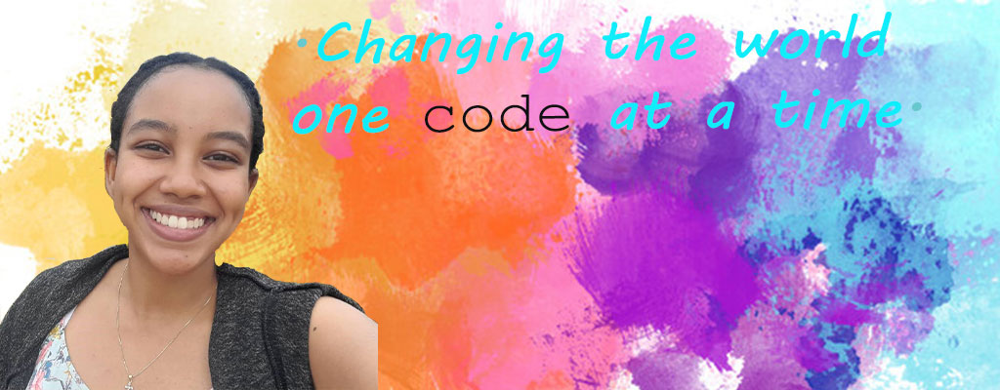

Home | BLOG

Israel Abraham's biography
Hi guys!!! My name is Israel Abraham, and I'm from Addia Ababa, Ethiopia. I'm a rising junior, Class of 2023.
I decided to take this class for several reasons. One is that I don't really know much about the "fancier" tech, meaning stuff like coding and Web development, but I would love to learn. The world's very tech oriented, so learning about it from a formal setting is a privilege that not a lot of people can get. Second is that there are so many problems in my country that can be solved with technology, and I want to be part of the solution. Last but definetly not least, connecting to people all over the world and hopefully making some new friends is something that I look forward to. :D
I would like to learn about website development, cyber security and how I can solve different problems using technology, as I mentioned.
Outside of school, I absolutely love reading. My favorite author is Francine Rivers. I can't really say I have a favorite book, there are to many. But my favorite genres are: Historical fiction, Christian fiction, Romance and Autobiographies. I'm also a beginner in embroidery, and I like hiking and going on bike rides. I also love traveling, whether it's to another town or another continent, the diversity of culture in our world just amazes me.
I decided to take this class for several reasons. One is that I don't really know much about the "fancier" tech, meaning stuff like coding and
Web development, but I would love to learn. The world's very tech oriented, so learning about it from a formal setting is a privilege that not a lot of people can get. Second is that there are so many problems in my country that can be solved with technology, and I want to be part of the solution. Last but definetly not least, connecting to people all over the world and hopefully making some new friends is something that I look forward to. :D
I would like to learn about website development, cyber security and how I can solve different problems using technology, as I mentioned.
Personal info
Outside of school, I absolutely love reading. My favorite author is Francine Rivers. I can't really say I have a favorite book, there are to many. But my favorite genres are: Historical fiction, Christian fiction, Romance and Autobiographies. I'm also a beginner in embroidery, and I like hiking and going on bike rides. I also love traveling, whether it's to another town or another continent, the diversity of culture in our world just amazes me.
I am so excited to be a part of this program, and I can't wait to meet you all. I hope and believe that we will have a great time. Stay safe!!! :)